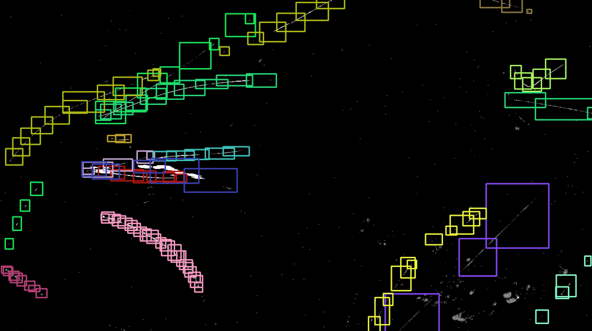

Monitoring aerial objects is crucial for security, wildlife conservation, and environmental studies. Traditional RGB-based approaches struggle with challenges such as scale variations, motion blur, and high-speed object movements, especially for small flying entities like insects and drones. In this work, we explore the potential of event-based vision for detecting and recognizing flying objects, in particular animals that may not follow short and long-term predictable patters. Event cameras offer high temporal resolution, low latency, and robustness to motion blur, making them well-suited for this task. We introduce EV-Flying, an event-based dataset of flying objects, comprising manually annotated birds, insects and drones with spatio-temporal bounding boxes and track identities. To effectively process the asynchronous event streams, we employ a point-based approach leveraging lightweight architectures inspired by PointNet. Our study investigates the classification of flying objects using point cloud-based event representations. The proposed dataset and methodology pave the way for more efficient and reliable aerial object recognition in real-world scenarios.
@inproceedings{magrini2025ev,
title={EV-flying: An event-based dataset for in-the-wild recognition of flying objects},
author={Magrini, Gabriele and Becattini, Federico and Colombo, Giovanni and Pala, Pietro},
booktitle={Proceedings of the Computer Vision and Pattern Recognition Conference},
pages={4947--4955},
year={2025}
}